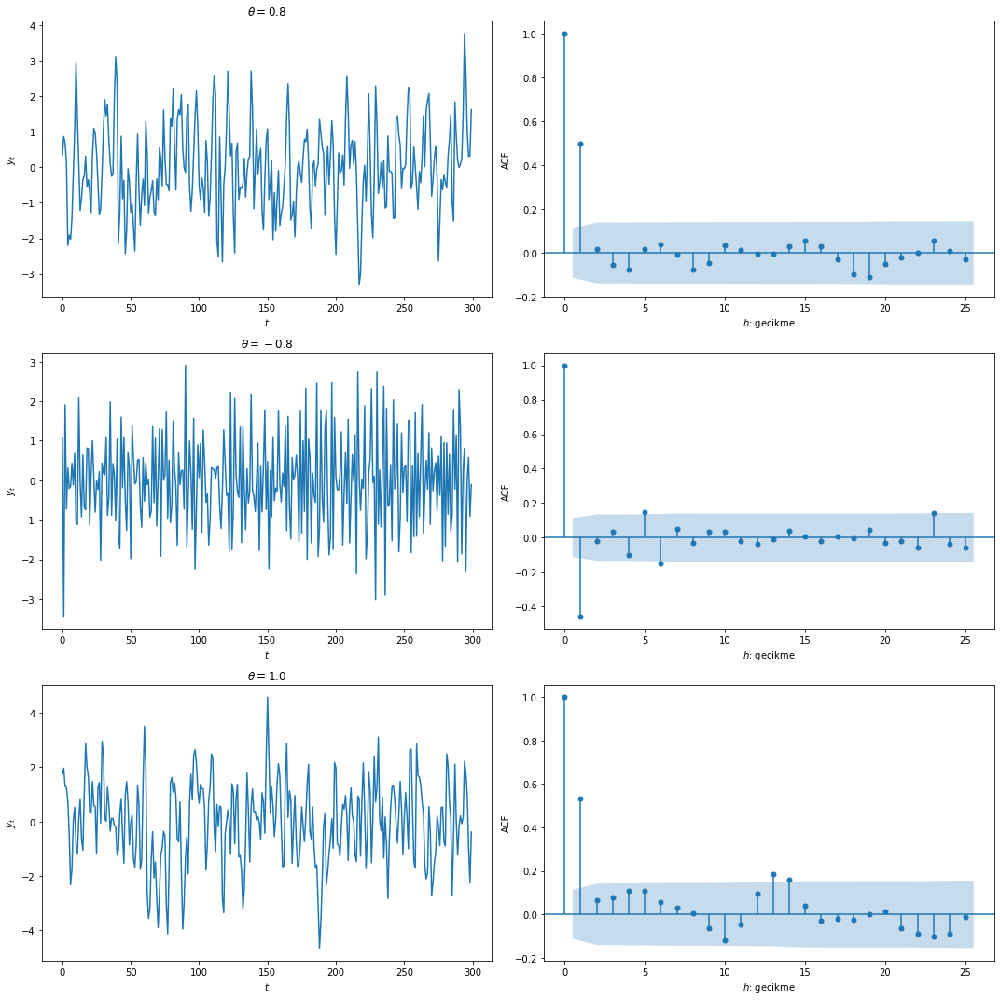
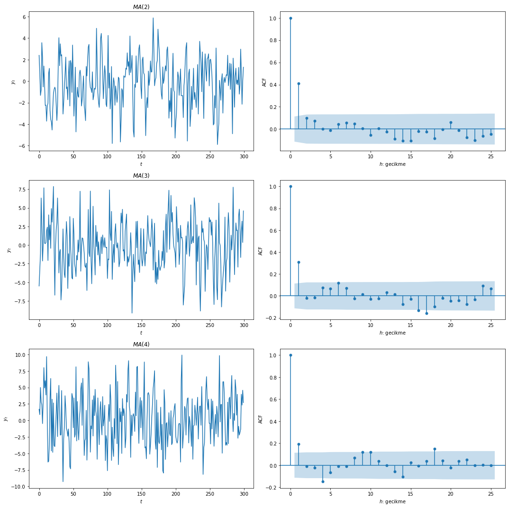
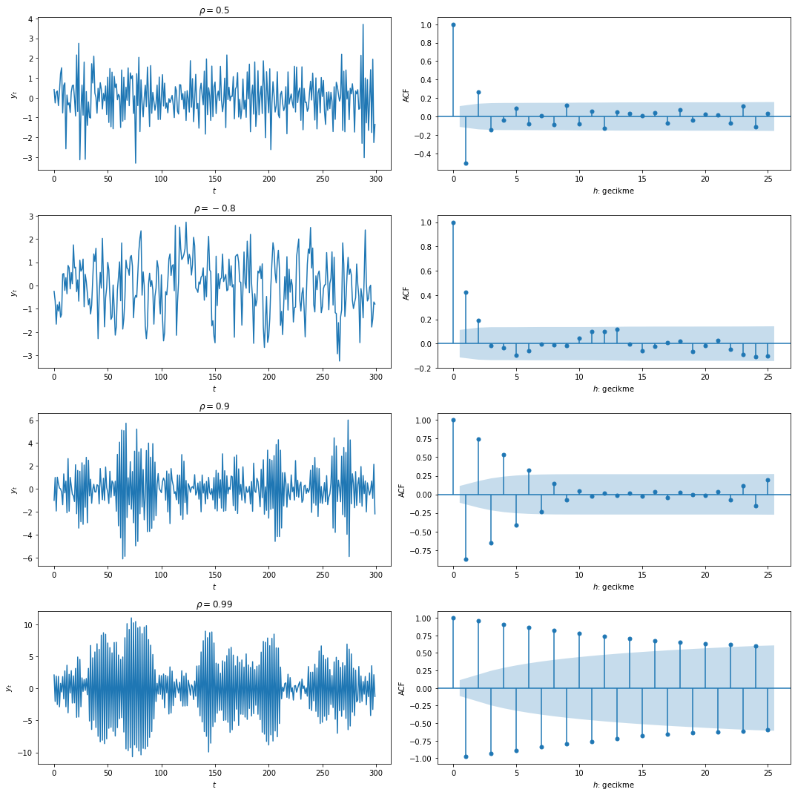

# grafik çizim ve veri üretimi için gereken çerçeveler
import numpy as np
import matplotlib.pyplot as plt
%matplotlib inline
# benzetim ve özilinti fonksiyonu çizimi
# için gerekli çerçevelerin çağırılması
from statsmodels.tsa.arima_process import ArmaProcess
import statsmodels.api as sm
# theta = 0.8 için 300 gözlemli MA(1) süreci benzetimi
ar1 = np.array([1])
ma1 = np.array([1, 0.8])
MA_benzetim1 = ArmaProcess(ar1, ma1)
benzetim_veri1 = MA_benzetim1.generate_sample(nsample=300)
# theta = -0.8 için 300 gözlemli MA(1) süreci benzetimi
ar2 = np.array([1])
ma2 = np.array([1, -0.8])
MA_benzetim2 = ArmaProcess(ar2, ma2)
benzetim_veri2 = MA_benzetim2.generate_sample(nsample=300)
# theta = 1.0 için 300 gözlemli MA(1) süreci benzetimi
ar3 = np.array([1])
ma3 = np.array([1, 1.0])
MA_benzetim3 = ArmaProcess(ar3, ma3)
benzetim_veri3 = MA_benzetim3.generate_sample(nsample=300)Zaman Serileri Analizi 2: Doğrusal Zaman Serileri
Zaman serileri
1.Giriş
Bir \(\left\{y_{t}\right\}\) zaman serisi aşağıdaki gibi yazılabiliyorsa doğrusal bir zaman serisidir:
\[ \begin{aligned} y_{t} &=\mu+\epsilon_{t}+\psi_{1} \epsilon_{t-1}+\psi_{2} \epsilon_{t-2}+\ldots \\ &=\mu+\sum_{i=0}^{\infty} \psi_{i} \epsilon_{t-i}, \quad \psi_{0}=1 \end{aligned} \]
Burada \(\epsilon_{t}\) bağımsız ve türdeş dağılan bir pür rassal süreçtir: \(\epsilon_{t} \sim w n\left(0, \sigma^{2}\right)\)
Doğrusal zaman serisi \(\left\{y_{t}\right\}\) ortakdeğişke (covariance) durağan ise ortalama, değişke (variance) ve özdeğişim (autocovariance) fonksiyonu kolayca bulunabilir:
\[\mathrm{E}\left(y_{t}\right)=\mu\]
\[ \begin{aligned} \gamma_{0} &=\mathrm{E}\left[\left(y_{t}-\mu\right)^{2}\right] \\ &=\mathrm{E}\left[\left(\epsilon_{t}+\psi_{1} \epsilon_{t-1}+\psi_{2} \epsilon_{t-2}+\ldots\right)^{2}\right] \\ &=\sigma^{2} \sum_{j=0}^{\infty} \psi_{j}^{2} \end{aligned} \]
Serinin değişkesinin sonlu olması ve zamanla birlikte değişmemesi için \(\sum_{i=0}^{\infty} \psi_{i}^{2}\) üzerine bazı sınırlamaların getirilmesi gerek.
Durağanlık için bu toplamın sonlu olması gerek. \(\left\{y_{t}\right\}\)’nin birinci özdeğişimi:
\[ \begin{aligned} \gamma_{1} &=\mathrm{E}\left[\left(y_{t}-\mu\right)\left(y_{t-1}-\mu\right)\right] \\ &=\mathrm{E}\left[\left(\epsilon_{t}+\psi_{1} \epsilon_{t-1}+\psi_{2} \epsilon_{t-2}+\ldots\right)\left(\epsilon_{t-1}+\psi_{1} \epsilon_{t-2}+\psi_{2} \epsilon_{t-3}+\ldots\right)\right] \\ &=\sigma^{2} \sum_{j=0}^{\infty} \psi_{j} \psi_{j+1} \end{aligned} \]
Daha genel olarak herhangi bir \(h\) gecikme sayısı için özdeğişimin
\[ \begin{aligned} \gamma_{h} &=\mathrm{E}\left[\left(\sum_{i=0}^{\infty} \psi_{i} \epsilon_{t-i}\right)\left(\sum_{j=0}^{\infty} \psi_{j} \epsilon_{t-h-j}\right)\right] \\ &=\sigma^{2} \sum_{j=0}^{\infty} \psi_{j} \psi_{j+h} \end{aligned} \]
olduğu görülür. Özilinti (autocorrelation) fonksiyonu ise:
\[ \rho_{h}=\frac{\gamma_{h}}{\gamma_{0}}=\frac{\sum_{j=0}^{\infty} \psi_{j} \psi_{j+h}}{1+\sum_{j=1}^{\infty} \psi_{j}^{2}} \]
olarak bulunur. \(\psi_{j}\) ağırlıkları pratikte bilinmez ve ayrı ayrı tahmin edilemez. Uygulamada çoğunlukla serideki doğrusal dinamik yapıyı iyi betimleyen özbağlanımlı modeller (autoregressive-AR), hareketli ortalama (moving average-MA) modelleri ya da bu ikisinin birleşimi olan özbağlanımlı hareketli ortalama (ARMA) modelleri kullanılır.
2.Hareketli Ortalama (Moving Average - MA) Süreçleri
MA(1): 1. derece hareketli ortalama sürecidir: Birinci derece hareketli ortalama süreci en yakın tarihli iki rassal şok teriminin ağırlıklı toplamını alır:
\[ y_{t}=\mu+\epsilon_{t}+\theta \epsilon_{t-1}, \quad \epsilon_{t} \sim w n\left(0, \sigma^{2}\right) \]
Cari dönem şokunun katsayısı 1’dir. Aşağıdaki modeli düşünelim:
\[ y_{t}=\mu+\alpha u_{t}+\beta u_{t-1}, \quad u_{t} \sim w n\left(0, \lambda^{2}\right) \]
Bu model, \(\epsilon_{t}=\alpha u_{t}, \theta=\beta / \alpha\) ve \(\sigma^{2}=\lambda^{2} \alpha^{2}\) dönüştürmeleri kullanılarak, yukarıdaki modeldeki gibi yazılabilir.
2.1.MA(1) Süreci
MA(1) süreci için beklenen değer ve değişke:
\[ \begin{aligned} \mathrm{E}\left(y_{t}\right) &=\mu+\mathrm{E}\left(\epsilon_{t}\right)+\theta \mathrm{E}\left(\epsilon_{t-1}\right) \\ &=\mu \end{aligned} \]
\[ \begin{aligned} \operatorname{Var}\left(y_{t}\right) &=\mathrm{E}\left[\left(y_{t}-\mu\right)^{2}\right]=\mathrm{E}\left[\left(\epsilon_{t}+\theta \epsilon_{t-1}\right)^{2}\right.\\ &=\mathrm{E}\left[\epsilon_{t}^{2}+\theta^{2} \epsilon_{t-1}^{2}+2 \theta \epsilon_{t} \epsilon_{t-1}\right] \\ &=\sigma^{2}+\theta^{2} \sigma^{2} \\ &=\left(1+\theta^{2}\right) \sigma^{2} \equiv \gamma_{0} \end{aligned} \]
Birinci özdeğişke:
\[ \begin{aligned} \gamma_{1} &=\operatorname{Cov}\left(y_{t}, y_{t-1}\right) \\ &=\mathrm{E}\left[\left(y_{t}-\mu\right)\left(y_{t-1}-\mu\right)\right] \\ &=\mathrm{E}\left[\left(\epsilon_{t}+\theta \epsilon_{t-1}\right)\left(\epsilon_{t-1}+\theta \epsilon_{t-2}\right)\right] \\ &=\mathrm{E}\left[\epsilon_{t} \epsilon_{t-1}+\theta \epsilon_{t} \epsilon_{t-2}+\theta \epsilon_{t-1}^{2}+\theta^{2} \epsilon_{t-1} \epsilon_{t-2}\right] \\ &=\mathrm{E}\left(\epsilon_{t} \epsilon_{t-1}\right)+\theta \mathrm{E}\left(\epsilon_{t} \epsilon_{t-2}\right)+\theta \mathrm{E}\left(\epsilon_{t-1}^{2}\right)+\theta^{2} \mathrm{E}\left(\epsilon_{t-1} \epsilon_{t-2}\right) \\ &=0+0+\theta \mathrm{E}\left(\epsilon_{t-1}^{2}\right)+0 \\ &=\theta \sigma^{2} \end{aligned} \]
İkinci özdeğişke:
\[ \begin{aligned} \gamma_{2} &=\operatorname{Cov}\left(y_{t}, y_{t-2}\right) \\ &=\mathrm{E}\left[\left(y_{t}-\mu\right)\left(y_{t-2}-\mu\right)\right] \\ &=\mathrm{E}\left[\left(\epsilon_{t}+\theta \epsilon_{t-1}\right)\left(\epsilon_{t-2}+\theta \epsilon_{t-3}\right)\right] \\ &=\mathrm{E}\left[\epsilon_{t} \epsilon_{t-2}+\theta \epsilon_{t} \epsilon_{t-3}+\theta \epsilon_{t-1} \epsilon_{t-2}+\theta^{2} \epsilon_{t-1} \epsilon_{t-3}\right] \\ &=\mathrm{E}\left(\epsilon_{t} \epsilon_{t-2}\right)+\theta \mathrm{E}\left(\epsilon_{t} \epsilon_{t-3}\right)+\theta \mathrm{E}\left(\epsilon_{t-1} \epsilon_{t-2}\right)+\theta^{2} \mathrm{E}\left(\epsilon_{t-1} \epsilon_{t-3}\right) \\ &=0 \end{aligned} \]
İkinci ve daha yüksek özdeğişkeler sıfırdır: \(\gamma_{h}=0, h \geq 2.\)
Böylece özdeğişkelerin mutlak değerlerinin toplamının sonlu olma koşulu sağlanır:
\[ \sum_{j=0}^{\infty}\left|\gamma_{j}\right|=\left(1+\theta^{2}+|\theta|\right) \sigma^{2} \]
Birinci özilinti:
\[ \begin{aligned} \rho_{1} &=\frac{\gamma_{1}}{\gamma_{0}} \\ &=\frac{\theta}{1+\theta^{2}} \end{aligned} \]
Buna göre özilinti fonksiyonu:
\[ \rho=\left\{\begin{array}{ll} \frac{\theta}{1+\theta^{2}}, & h=1 \\ 0, & h \geq 2 \end{array}\right. \]
MA(1) sürecinin özilinti fonksiyonu 1. gecikmede sıfırdan farklı, daha yüksek gecikmelerde ise sıfır olacaktır. \(\rho_{1}\) en yüksek değerine (0.5) \(\theta = 1\) olduğunda ulaşır. Ayrıca \(\theta\) ve \(1 / \theta\) değerleri aynı \(\rho_{1}\) değerini verir.
Örnek: MA(1) Süreçleri ve Özilinti Fonksiyonları
MA(1) süreçlerini ve özilinti fonksiyonlarını farklı \(\theta\) değerlerine göre benzetimle gerçekleyebilir ve çizebiliriz:
fig, ax = plt.subplots(3, 2, figsize=(15,15));
# theta = 0.8 için verinin çizimi
ax[0,0].plot(benzetim_veri1);
ax[0,0].set_xlabel("$t$");
ax[0,0].set_ylabel("$y_{t}$");
ax[0,0].set_title("$ \\theta = 0.8$");
# theta = 0.8 için özilinti fonksiyonu çizimi
sm.graphics.tsa.plot_acf(benzetim_veri1, ax=ax[0,1])
ax[0,1].set_xlabel("$h$: gecikme");
ax[0,1].set_ylabel("ACF");
ax[0,1].set_title("");
# theta = -0.8 için verinin çizimi
ax[1,0].plot(benzetim_veri2);
ax[1,0].set_xlabel("$t$");
ax[1,0].set_ylabel("$y_{t}$");
ax[1,0].set_title("$ \\theta = -0.8$");
# theta = -0.8 için özilinti fonksiyonu çizimi
sm.graphics.tsa.plot_acf(benzetim_veri2, ax=ax[1,1])
ax[1,1].set_xlabel("$h$: gecikme");
ax[1,1].set_ylabel("ACF");
ax[1,1].set_title("");
# theta = 1.0 için verinin çizimi
ax[2,0].plot(benzetim_veri3);
ax[2,0].set_xlabel("$t$");
ax[2,0].set_ylabel("$y_{t}$");
ax[2,0].set_title("$ \\theta = 1.0$");
# theta = 1.0 için özilinti fonksiyonu çizimi
sm.graphics.tsa.plot_acf(benzetim_veri3, ax=ax[2,1])
ax[2,1].set_xlabel("$h$: gecikme");
ax[2,1].set_ylabel("ACF");
ax[2,1].set_title("");
plt.tight_layout()
2.2.MA(q) Süreci
Gecikme uzunluğu \(q\) olan hareketli ortalama süreci en yakın tarihli \(q + 1\) rassal şok teriminin ağırlıklı toplamını alır:
\[ y_{t}=\mu+\epsilon_{t}+\theta_{1} \epsilon_{t-1}+\theta_{2} \epsilon_{t-2}+\ldots+\theta_{q} \epsilon_{t-q}, \quad \epsilon_{t} \sim w n\left(0, \sigma^{2}\right) \]
\(MA(q)\) sürecinin beklenen değer ve değişkesi:
\[ \begin{array}{c} \mathrm{E}\left(y_{t}\right)=\mu \\ \operatorname{Var}\left(y_{t}\right)=\left(1+\theta_{1}^{2}+\theta_{2}^{2}+\ldots+\theta_{q}^{2}\right) \sigma^{2} \end{array} \]
\(h\) özdeğişke ise:
\[ \gamma_{h}=\left\{\begin{array}{ll} \left(\theta_{h}+\theta_{h+1} \theta_{1}+\theta_{h+2} \theta_{2}+\ldots+\theta_{q} \theta_{q-h}\right), & h=1,2, \ldots, p \text { için; } \\ 0, & h>q \text { ise. } \end{array}\right. \]
\(\theta_{j}\) değerleri ne olursa olsun \(MA(q)\) süreci durağan ve döngeldir (ergodic). Özilinti fonksiyonu \(q\) gecikmeden sonra 0 değerini alır.
Örnek: MA(q) Süreçleri ve Özilinti Fonksiyonları
\(\theta = 0.8\) ve \(q=2,3,4\) için \(MA(q)\) süreçlerini ve özilinti fonksiyonlarını benzetimle gerçekleyebilir ve çizebiliriz:
# theta = 0.8 için 300 gözlemli MA(2) süreci benzetimi
ar1 = np.array([1])
ma1 = np.array([2, 0.8])
MA_benzetim1 = ArmaProcess(ar1, ma1)
benzetim_veri1 = MA_benzetim1.generate_sample(nsample=300)
# theta = 0.8 için 300 gözlemli MA(3) süreci benzetimi
ar2 = np.array([1])
ma2 = np.array([3, 0.8])
MA_benzetim2 = ArmaProcess(ar2, ma2)
benzetim_veri2 = MA_benzetim2.generate_sample(nsample=300)
# theta = 0.8 için 300 gözlemli MA(4) süreci benzetimi
ar3 = np.array([1])
ma3 = np.array([4, 0.8])
MA_benzetim3 = ArmaProcess(ar3, ma3)
benzetim_veri3 = MA_benzetim3.generate_sample(nsample=300)fig, ax = plt.subplots(3, 2, figsize=(15,15));
# theta = 0.8, q=2 için verinin çizimi
ax[0,0].plot(benzetim_veri1);
ax[0,0].set_xlabel("$t$");
ax[0,0].set_ylabel("$y_{t}$");
ax[0,0].set_title("$ MA(2) $");
# theta = 0.8, q=2 için özilinti fonksiyonu çizimi
sm.graphics.tsa.plot_acf(benzetim_veri1, ax=ax[0,1])
ax[0,1].set_xlabel("$h$: gecikme");
ax[0,1].set_ylabel("ACF");
ax[0,1].set_title("");
# theta = 0.8, q=3 için verinin çizimi
ax[1,0].plot(benzetim_veri2);
ax[1,0].set_xlabel("$t$");
ax[1,0].set_ylabel("$y_{t}$");
ax[1,0].set_title("$ MA(3) $");
# theta = 0.8, q=3 için özilinti fonksiyonu çizimi
sm.graphics.tsa.plot_acf(benzetim_veri2, ax=ax[1,1])
ax[1,1].set_xlabel("$h$: gecikme");
ax[1,1].set_ylabel("ACF");
ax[1,1].set_title("");
# theta = 0.8, q=4 için verinin çizimi
ax[2,0].plot(benzetim_veri3);
ax[2,0].set_xlabel("$t$");
ax[2,0].set_ylabel("$y_{t}$");
ax[2,0].set_title("$ MA(4) $");
# theta = 0.8, q=4 için özilinti fonksiyonu çizimi
sm.graphics.tsa.plot_acf(benzetim_veri3, ax=ax[2,1])
ax[2,1].set_xlabel("$h$: gecikme");
ax[2,1].set_ylabel("ACF");
ax[2,1].set_title("");
plt.tight_layout()
2.3.MA(\(\infty\)) Süreci
\[ y_{t}=\mu+\epsilon_{t}+\psi_{1} \epsilon_{t-1}+\psi_{2} \epsilon_{t-2}+\ldots=\mu+\sum_{j=0}^{\infty} \psi_{j} \epsilon_{t-j}, \quad \epsilon_{t} \sim w n\left(0, \sigma^{2}\right) \]
Aşağıdaki mutlak toplanabilirlik (absolute summability) koşulu sağlanıyorsa süreç eşdeğişke durağan ve döngeldir:
\[ \sum_{j=0}^{\infty}\left|\psi_{j}\right|<\infty \]
Katsayıların toplamı sonlu ise özdeğişkelerin toplamı da sonludur:
\[ \sum_{j=0}^{\infty}\left|\gamma_{j}\right|<\infty \]
3.Özbağlanımlı (Autoregressive-AR) Süreçler
Birinci Derece Özbağlanımlı Süreç \(AR(1)\) denklemdeki gibi yazılabilir:
\[ y_{t}=c+\phi y_{t-1}+\epsilon_{t}, \quad \epsilon_{t} \sim w n\left(0, \sigma^{2}\right) \]
\(\left\{y_{t}\right\}_{t=-\infty}^{\infty}\) serisi için yeterince büyük herhangi bir \(t\) için rassal değișken \(y\) ’nin alacağı değer:
\[ \begin{aligned} y_{t} &=\frac{c}{1-\phi}+\epsilon_{t}+\phi \epsilon_{t-1}+\phi^{2} \epsilon_{t-2}+\ldots \\ &=\frac{c}{1-\phi}+\sum_{j=0}^{\infty} \phi^{j} \epsilon_{t-j} \end{aligned} \]
şeklinde yazılabilir.
Burada \(|\phi|<1\) varsayımı altında \(\left(1+\phi+\phi^{2}+\phi^{3}+\ldots\right) \rightarrow \frac{1}{1-\phi}\) özelliği kullanılmıștır. Yukarıdaki ifadede \(\psi_{j}=\phi^{j}\) olarak düșünülürse AR(1) sürecinin geçmiș șoklarin ağırlıklı ortalaması olduğu görülebilir. Bu katsayıların toplamı sonlu ise \(\mathrm{MA}(\infty)\) gösterimi mümkündür ve \(\mathrm{AR}(1)\) süreci ortalama için döngeldir. Açıktır ki \(|\phi|<1\) koșulu altında:
\[ \begin{aligned} \sum_{j=0}^{\infty}\left|\psi_{j}\right| &=\sum_{j=0}^{\infty}|\phi|^{j} \\ &=\frac{1}{1-|\phi|} \end{aligned} \]
Beklenen değer alınırsa:
\[ \begin{aligned} \mathrm{E}\left(y_{t}\right) &=\frac{c}{1-\phi}+\sum_{j=0}^{\infty} \phi^{j} \mathrm{E}\left(\varepsilon_{t-j}\right) \\ &=\frac{c}{1-\phi} \\ & \equiv \mu \end{aligned} \]
bulunur.
Eğer \(|\phi|=1\) ise \(y_{t}\) durağan değildir. \(y_{t}\) ’nin ortalaması ancak \(c=0\) ise 0 olur. Eer \(|\phi|>1\) ise seri patlayıcıdır (explosive).
3.1.AR(1) Süreci
AR(1) sürecinin \(h\) gecikmede özdeğişkesi:
\[ \begin{aligned} \gamma_{h} &=\mathrm{E}\left[\left(y_{t}-\mu\right)\left(y_{t-h}-\mu\right)\right] \\ &=\left(\phi^{h}+\phi^{h+2}+\phi^{h+4}+\ldots\right) \sigma^{2} \\ &=\phi^{h}\left(\phi+\phi^{2}+\phi^{4}+\ldots\right) \sigma^{2} \\ &=\frac{\phi^{h}}{1-\phi^{2}} \sigma^{2}=\phi^{h} \gamma_{0} \end{aligned} \]
olarak bulunur. \(h = 0\) durumunda koşulsuz değişke ifadesine ulaşılır.
\(y_{t}\) ’nin değişkesini bulmak için yine durağanlık özelliğinden (eger sağlanıyorsa) hareket edebiliriz. Böylece değişke:
\[ \gamma_{0}=\frac{\sigma^{2}}{1-\phi^{2}} \]
olur. Burada \(y_{t}\) ‘nin değişkesi \(\gamma_{0}\)’ in negatif olmama ve sonlu olma koșulunu sağlayabilmesi için \(\phi^{2}<1\) olmak zorundadır. Bu da ancak ve ancak \(|\phi|<1\) ise sağlanır.
Şok sürecinin normal beyaz gürültü (white noise) olduğu ve \(|\phi|<1\) varsayımlar altında \(y_{t}\) de kavuşmaz (aymptotic) normal dağılıma ( \(t\) sonsuza giderken) uyar:
\[ y_{t} \sim \mathbf{N}\left(\frac{c}{1-\phi}, \frac{\sigma^{2}}{1-\phi^{2}}\right) \]
Böylece AR(1) süreci için özdeğişke fonksiyonu
\[ \gamma_{h}=\left\{\begin{array}{ll} \phi \gamma_{1}+\sigma^{2}, & h=0 \text { ise; } \\ \phi \gamma_{h-1}, & h>0 \text { ise } \end{array}\right. \]
olarak yazılabilir.
Özdeğişke fonksiyonu birinci derece fark denklemi şeklinde yazılabildiğinden bunu çözümü \(\gamma_{h}=\rho^{h}\gamma_{0}\) olur. Buradan hareketle \(\gamma_{h} / \gamma_{0}\) olarak tanımlanan özilinti fonksiyonu:
\[ \rho_{h}=\phi^{h} \]
olur. AR(1) sürecinin özilinti fonksiyonu 1’den başlayarak \(\phi\) oranında düzgün bir biçimde üstel olarak azalır.
Örnek: AR(1) Süreçleri ve Özilinti Fonksiyonları
AR(1) süreçlerini ve özilinti fonksiyonlarını farklı \(\rho\) değerlerine göre benzetimle gerçekleyebilir ve çizebiliriz:
# çizim ve veri üretimi için gereken çerçeveler
import numpy as np
import matplotlib.pyplot as plt
%matplotlib inline
# benzetim ve özilinti fonksiyonu çizimi
# için gerekli çerçevelerin çağırılması
from statsmodels.tsa.arima_process import ArmaProcess
import statsmodels.api as sm
# rho = 0.5 için 300 gözlemli AR(1) süreci benzetimi
ar1 = np.array([1, 0.5])
ma1 = np.array([1])
AR_benzetim1 = ArmaProcess(ar1, ma1)
benzetim_veri1 = AR_benzetim1.generate_sample(nsample=300)
# rho = -0.5 için 300 gözlemli AR(1) süreci benzetim
ar2 = np.array([1, -0.5])
ma2 = np.array([1])
AR_benzetim2 = ArmaProcess(ar2, ma2)
benzetim_veri2 = AR_benzetim2.generate_sample(nsample=300)
# rho = 0.9 için 300 gözlemli AR(1) süreci benzetimi
ar3 = np.array([1, 0.9])
ma3 = np.array([1])
AR_benzetim3 = ArmaProcess(ar3, ma3)
benzetim_veri3 = AR_benzetim3.generate_sample(nsample=300)
# rho = 0.99 için 300 gözlemli AR(1) süreci benzetimi
ar4 = np.array([1, 0.99])
ma4 = np.array([1])
AR_benzetim4 = ArmaProcess(ar4, ma4)
benzetim_veri4 = AR_benzetim4.generate_sample(nsample=300)fig, ax = plt.subplots(4, 2, figsize=(15,15));
# rho = 0.5 için verinin çizimi
ax[0,0].plot(benzetim_veri1);
ax[0,0].set_xlabel("$t$");
ax[0,0].set_ylabel("$y_{t}$");
ax[0,0].set_title("$ \\rho = 0.5$");
# rho = 0.5 için özilinti fonksiyonu çizimi
sm.graphics.tsa.plot_acf(benzetim_veri1, ax=ax[0,1])
ax[0,1].set_xlabel("$h$: gecikme");
ax[0,1].set_ylabel("ACF");
ax[0,1].set_title("");
# rho = -0.5 için verinin çizimi
ax[1,0].plot(benzetim_veri2);
ax[1,0].set_xlabel("$t$");
ax[1,0].set_ylabel("$y_{t}$");
ax[1,0].set_title("$ \\rho = -0.8$");
# rho = -0.5 için özilinti fonksiyonu çizimi
sm.graphics.tsa.plot_acf(benzetim_veri2, ax=ax[1,1])
ax[1,1].set_xlabel("$h$: gecikme");
ax[1,1].set_ylabel("ACF");
ax[1,1].set_title("");
# rho = 0.9 için verinin çizimi
ax[2,0].plot(benzetim_veri3);
ax[2,0].set_xlabel("$t$");
ax[2,0].set_ylabel("$y_{t}$");
ax[2,0].set_title("$ \\rho = 0.9$");
# rho = 0.9 için özilinti fonksiyonu çizimi
sm.graphics.tsa.plot_acf(benzetim_veri3, ax=ax[2,1])
ax[2,1].set_xlabel("$h$: gecikme");
ax[2,1].set_ylabel("ACF");
ax[2,1].set_title("");
# rho = 0.99 için verinin çizimi
ax[3,0].plot(benzetim_veri4);
ax[3,0].set_xlabel("$t$");
ax[3,0].set_ylabel("$y_{t}$");
ax[3,0].set_title("$ \\rho = 0.99$");
# rho = 0.99 için özilinti fonksiyonu çizimi
sm.graphics.tsa.plot_acf(benzetim_veri4, ax=ax[3,1])
ax[3,1].set_xlabel("$h$: gecikme");
ax[3,1].set_ylabel("ACF");
ax[3,1].set_title("");
plt.tight_layout()
3.2.AR(p) Süreci
\[ y_{t}=c+\phi_{1} y_{t-1}+\phi_{2} y_{t-2}+\ldots+\phi_{p} y_{t-p}+\epsilon_{t}, \quad \epsilon_{t} \sim w n\left(0, \sigma^{2}\right) \]
AR(p) sürecinin olması için aşağıdaki ifadenin,
\[ 1-\phi_{1} L-\phi_{2}^{2}-\ldots-\phi_{p} L^{p}=0 \]
köklerinin birim çemberin dışında olması gerekir. Ya da aşağıdaki matrisin özgül değerlerinin 1’den küçük olması gerekir.
\[ F=\left[\begin{array}{ccccc} \phi_{1} & \phi_{2} & \ldots & \phi_{p-1} & \phi_{p} \\ 1 & 0 & \ldots & 0 & 0 \\ 0 & 1 & \ldots & 0 & 0 \\ \vdots & \vdots & \ddots & \vdots & \vdots \\ 0 & 0 & \ldots & 1 & 0 \end{array}\right] \]
4.Özbağlanımlı Hareketli Ortalama, ARMA(p,q) Süreci
\(\epsilon_{t} \sim w n\left(0, \sigma^{2}\right) \text { olmak üzere } \operatorname{ARMA}(p, q) \text { modeli: }\)
\[ y_{t}=c+\phi_{1} y_{t-1}+\ldots+\phi_{p} y_{t-p}+\epsilon_{t}+\theta_{1} \epsilon_{t-1}+\ldots+\theta_{q} \epsilon_{t-q} \]
\[ \mathrm{E}\left(y_{t}\right)=\frac{c}{1-\phi_{1}-\phi_{2}-\ldots-\phi_{p}} \]
ARMA(p,q) sürecinin durağanlığı tamamen AR(p) kısmına bağlıdır. AR(p) kısmı durağansa ARMA(p,q) süreci de durağandır.